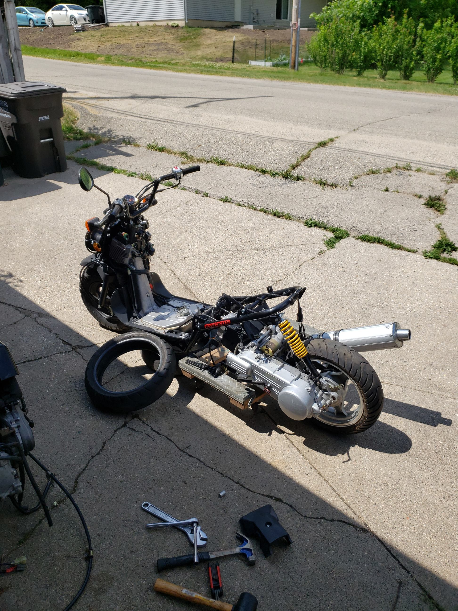
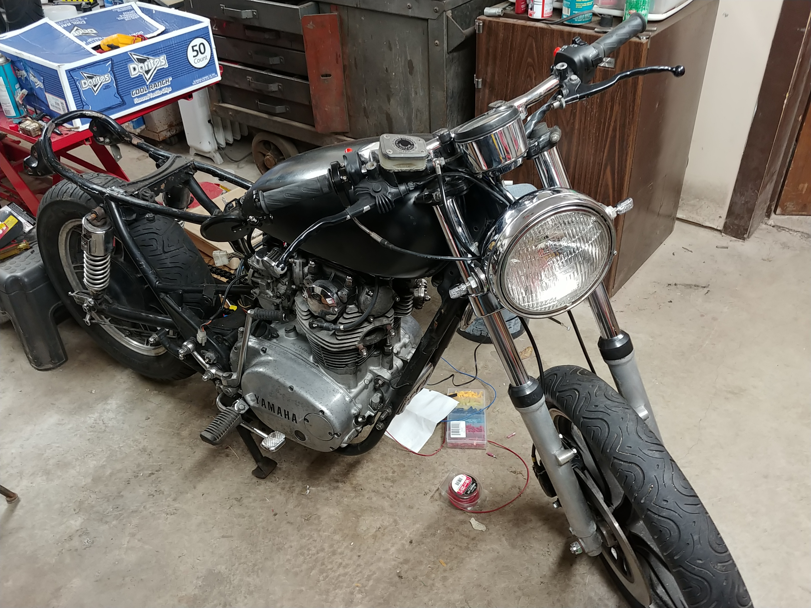
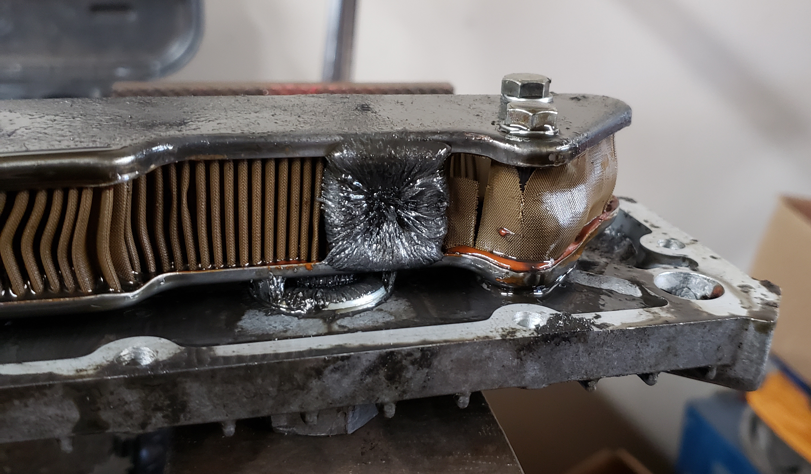
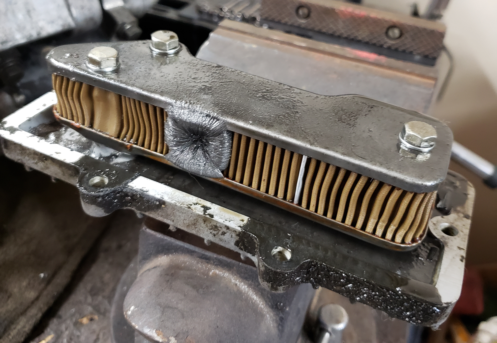
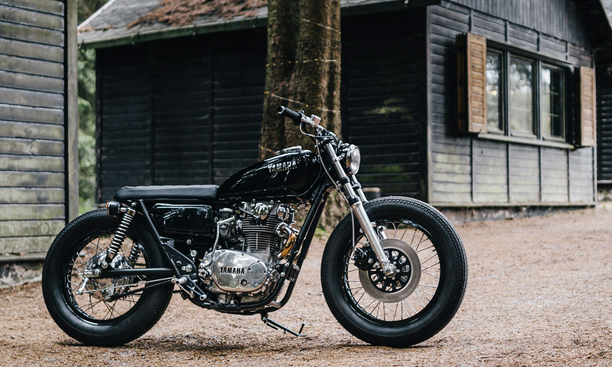
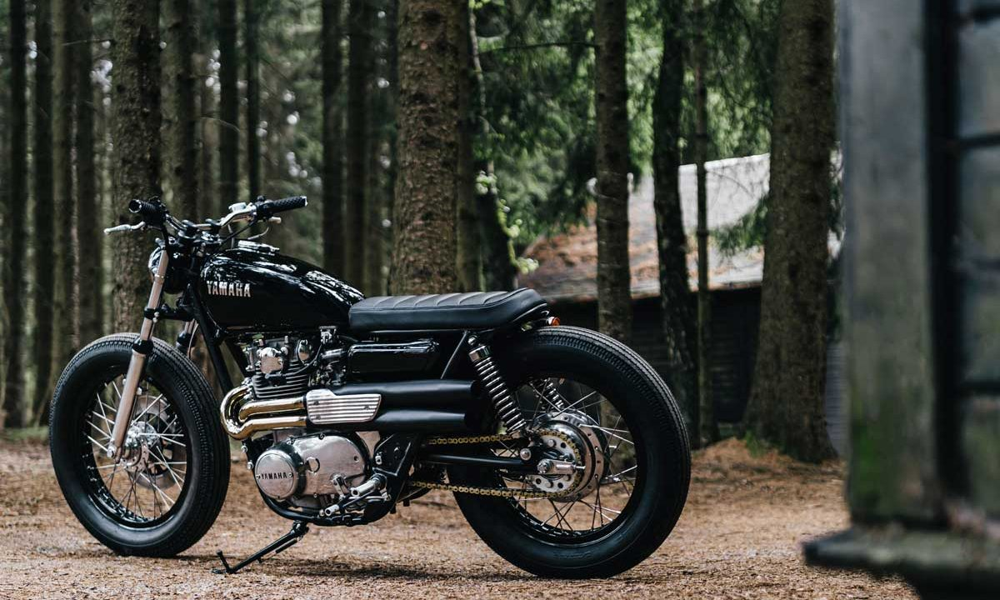

This is a list of personal and semi-professional projects that I have worked on or am working on.
An overview is provided at the beginning of each project followed by a more deep dive into topics such as how it works, the current status, and future plans.
LENSS (Lakeshore Environmental and Night Sky Sensor)
The goal of the Lakeshore Environmental and Night Sky Sensor (LENSS) Project is to contribute to the environmental health of Geneva Lake and increase the level of community involvement with environmental issues through a community-based environmental action project to design, test, build and deploy remote-monitoring stations that can accommodate a variety of sensors.
This Website
As outlined on the main page, the goal of this project is to create an internet presence not largely controlled by other companies and to learn about the infrastructure of websites. So far, the site is pure HTML and CSS, completely hand written, with no client-side or server-side scripting. The site is hosted locally, but load balancing across my other remote machines is in the works. A transition over to PHP is planned so as to make maintaining and adding new pages easier. JavaScript will also be added at a later stage to make navigation on mobile devices easier.
GY6 Swapped Honda Ruckus
A couple years back, I came into possession of a 2003 Honda Ruckus 50 that was not running. After a quick carb clean, it started up just fine. Unfortunately, there have been a few electrical issues that I haven't quite figured out. The battery won't charge, but it will still run so the engine dies at stock idle speeds. Besides that, it's terribly slow and doesn't get taken out much because of it with me favoring a modded 2004 Yamaha Zuma with a 70cc head and other mods. I want to change that, and have decided to do a GY6 swap with a donor generic Chinese scooter that has been sitting in my garage collecting dust. Because of the aformentioned electrical problems, I will be trying to use the harness and electronics from the Chinese scooter and integrate the stock Ruckus controls with it. So far, I have mounted the GY6 into the Ruckus, but the support bar that helps keep the engine mount from moving under load won't fit without modification. The problem is that the kit was designed with a specific mounting point on the frame in mind, and my model does not have it. A few possible solutions are to weld a mount tab to the intended location, bend a new support bar that mounts to the old engine mount holes, or fabricate/machine a new mount bracket and support bar such that there is no bend. The first option is a bit destructive to the stock frame and interferes with an existing bolt hole for the stock floorboard. Option two is definitely the easiest, but there would be a bend in the bar that could buckle under load. I might be overthinking that option, and as long as the bar is thick enough, it might be just fine. I still prefer the last option because of those concerns, though, and I have designed a bracket to bolt onto an unused portion of the frame. Will post back when the status of the braket has changed.

Pictured: Honda Ruckus half way through engine swap. Realized that the support bar will not fit without modification.
1981 Yamaha XS650
My goal with this project is to create a clean, minimal motorcycle with as much DIY custom work as possible [read "safe"].

Pictured: XS650 in the shop
This is one of the biggest and longest projects that I am working on, and I do not see it reaching completion anytime soon due to school. One of the major hurdles is getting the engine to run. I did get it to work, but something happened, and currently it does not. A comprehensive teardown of the engine needs to happen to fully understand the problem, which takes time, so getting it to run is on hold.
In the meantime, there are many other aspects of the project that need to be addressed. They are outlined below.
Engine Teardown
Pictured: XS650 engine at the beginning of the teardown.
It is finally time to do an engine teardown and rebuild. First thing to do was drain the oil. I pulled off the bottom cover and took a look at the oil filter (shown bellow). There is a tear in the filter and a significant buildup of metal shavings... not good. I'll be ordering a new oil filter, and hopefully can discover the cause of the wear as the engine is disassembled.


Pictured: Tear in the oil filter and buildup of metal shavings.
Design References and Ideas
While researching custom XS builds, I came across the article "Custom 1974 Yamaha XS650 Proves Age Is Just a Number" in autoevolution magazine. Cheesy title aside, I found that the build featured in the article is almost exactly the design I am trying to execute.


Pictured: My XS650 design goal
There are only a few elements that I would do different:
The custom exhaust is a project I am not ready to tackle, but a 2 into 1 system like this 2-1 XS performance headpipe set from MikesXS with a muffler is a more likely candidate.
I may attempt a custom seat using materials I already have, but in the event that it fails, a universal flat seat from Tuffside is one that I think will work well.
The spedometer will also most likely be external, as I like the external look a bit more. If it ends up not looking like I imagine or I want to tackle another welding project, then maybe I will try to integrate it into the headlight.
I highly recomend checking out the original picures on the creator's Instagram profile where there are many amazing car and bike builds.
Proof That the Engine Ran
Shown: XS650 running, then over-revving
This is a video my sister took during my first and only test of the bike. As shown in the video, there is a bit of backfiring and the engine begins to rev uncontrollably, requiring me to pull the spark plug caps to kill the motor.
After this video, I tried to start it back up, but it just bogged down and drained the battery. I then attempted to kick it over, but the kick starter was totaly limp with the clutch pulled in. With the clutch engaged, the lever was totaly locked up and would not budge.
I am going to pull the engine apart in the next month to do a full rebuild. Hopefully the issue is not something too catastrophic.
Arduino Controlled Ignition System
The goal of this project is to design an ignition and timing advance system based on an Arduino or similar microcontroller.
As noted in the main section, the engine needs an overhaul before it can run. One of my goals is to have the motorcycle kick-only with no electric start.